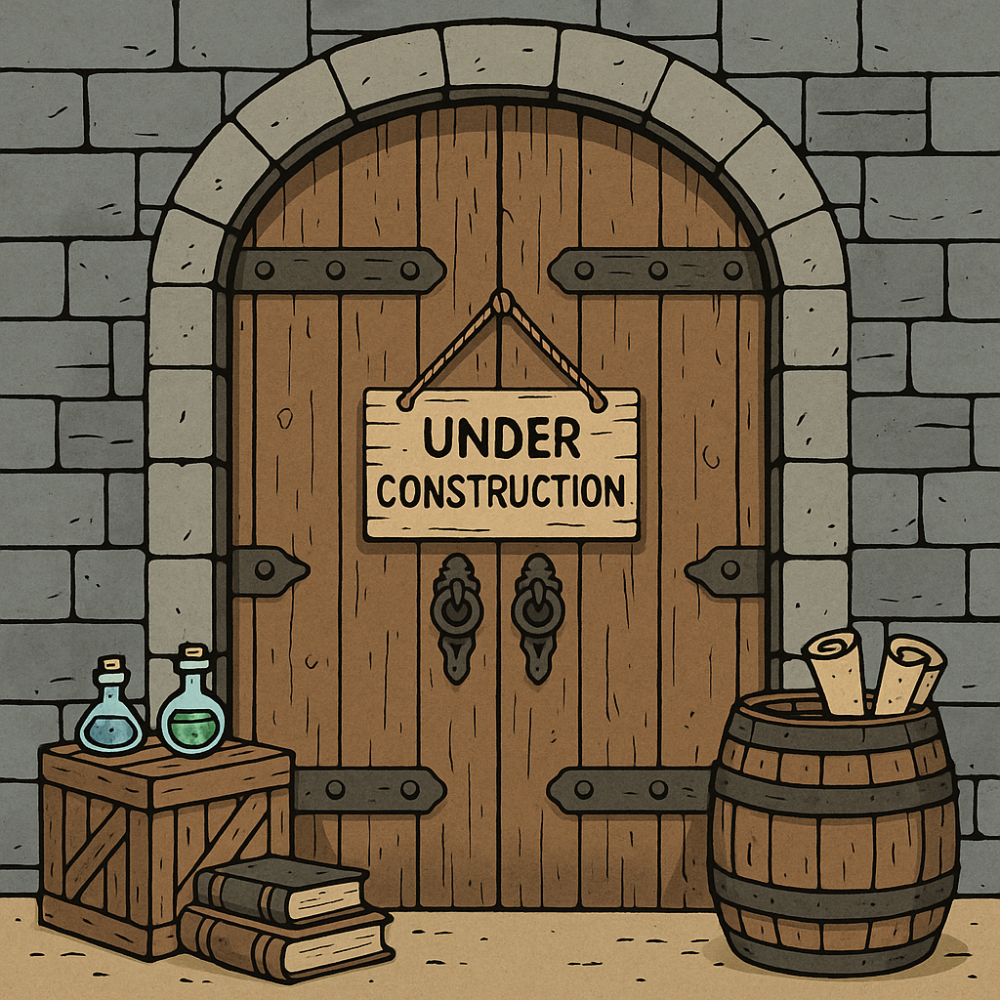

Scripted Realms is under construction
I’m building modules, monsters, and GM tools. While the site gets wired up, you can follow progress, snag downloads, and support the work on Ko-fi.
© Scripted Realms. All rights reserved.